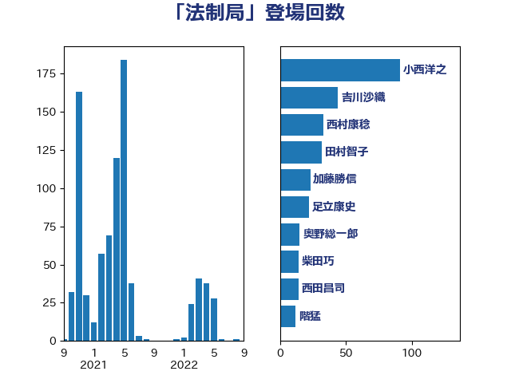

単語「法制局」

| 小西洋之 | 立憲民主党 | 91 回 |
| 吉川沙織 | 立憲民主党 | 44 回 |
| 西村康稔 | 自由民主党 | 33 回 |
| 田村智子 | 日本共産党 | 32 回 |
| 加藤勝信 | 自由民主党 | 23 回 |
| 足立康史 | 日本維新の会 | 22 回 |
| 奥野総一郎 | 立憲民主党 | 15 回 |
| 柴田巧 | 日本維新の会 | 14 回 |
| 西田昌司 | 自由民主党 | 14 回 |
| 階猛 | 立憲民主党 | 12 回 |
| 森英介 | 自由民主党 | 11 回 |
| 浜野喜史 | 国民民主党 | 11 回 |
| 神谷裕 | 立憲民主党 | 11 回 |
| 菅義偉 | 自由民主党 | 11 回 |
| 塩川鉄也 | 日本共産党 | 10 回 |
| 石川博崇 | 公明党 | 10 回 |
| 後藤祐一 | 立憲民主党 | 9 回 |
| 枝野幸男 | 立憲民主党 | 9 回 |
| 中野洋昌 | 公明党 | 8 回 |
| 佐藤茂樹 | 公明党 | 8 回 |
| 石井準一 | 自由民主党 | 8 回 |
| 逢坂誠二 | 立憲民主党 | 8 回 |
| 井上哲士 | 日本共産党 | 7 回 |
| 新藤義孝 | 自由民主党 | 5 回 |
| 馬場伸幸 | 日本維新の会 | 5 回 |
| 小沼巧 | 立憲民主党 | 4 回 |
| 山東昭子 | 自由民主党 | 4 回 |
| 櫻井周 | 立憲民主党 | 4 回 |
| 武田良太 | 自由民主党 | 4 回 |
| 盛山正仁 | 自由民主党 | 4 回 |
| 石井正弘 | 自由民主党 | 4 回 |
| 三木圭恵 | 日本維新の会 | 3 回 |
| 塩村あやか | 立憲民主党 | 3 回 |
| 山谷えり子 | 自由民主党 | 3 回 |
| 岩屋毅 | 自由民主党 | 3 回 |
| 平井卓也 | 自由民主党 | 3 回 |
| 杉尾秀哉 | 立憲民主党 | 3 回 |
| 浅田均 | 日本維新の会 | 3 回 |
| 若宮健嗣 | 自由民主党 | 3 回 |
| 赤嶺政賢 | 日本共産党 | 3 回 |
| 遠藤敬 | 日本維新の会 | 3 回 |
| 麻生太郎 | 自由民主党 | 3 回 |
| 山井和則 | 立憲民主党 | 2 回 |
| 山本剛正 | 日本維新の会 | 2 回 |
| 山本順三 | 自由民主党 | 2 回 |
| 志位和夫 | 日本共産党 | 2 回 |
| 末松義規 | 立憲民主党 | 2 回 |
| 柳ヶ瀬裕文 | 日本維新の会 | 2 回 |
| 浅野哲 | 国民民主党 | 2 回 |
| 片山さつき | 自由民主党 | 2 回 |
| 田村憲久 | 自由民主党 | 2 回 |
| 矢倉克夫 | 公明党 | 2 回 |
| 福山哲郎 | 立憲民主党 | 2 回 |
| 羽田次郎 | 立憲民主党 | 2 回 |
| 舞立昇治 | 自由民主党 | 2 回 |
| 長妻昭 | 立憲民主党 | 2 回 |
| 長浜博行 | 無所属 | 2 回 |
| 上川陽子 | 自由民主党 | 1 回 |
| 佐藤正久 | 自由民主党 | 1 回 |
| 北神圭朗 | 無所属 | 1 回 |
| 吉田はるみ | 立憲民主党 | 1 回 |
| 吉田忠智 | 立憲民主党 | 1 回 |
| 吉良よし子 | 日本共産党 | 1 回 |
| 嘉田由紀子 | 無所属 | 1 回 |
| 大塚耕平 | 国民民主党 | 1 回 |
| 大西健介 | 立憲民主党 | 1 回 |
| 小倉將信 | 自由民主党 | 1 回 |
| 小林鷹之 | 自由民主党 | 1 回 |
| 小池晃 | 日本共産党 | 1 回 |
| 小野泰輔 | 日本維新の会 | 1 回 |
| 山崎誠 | 立憲民主党 | 1 回 |
| 山本有二 | 自由民主党 | 1 回 |
| 山添拓 | 日本共産党 | 1 回 |
| 山田宏 | 自由民主党 | 1 回 |
| 岡田克也 | 立憲民主党 | 1 回 |
| 岸田文雄 | 自由民主党 | 1 回 |
| 御法川信英 | 自由民主党 | 1 回 |
| 打越さく良 | 立憲民主党 | 1 回 |
| 新垣邦男 | 立憲民主党 | 1 回 |
| 有村治子 | 自由民主党 | 1 回 |
| 本村伸子 | 日本共産党 | 1 回 |
| 松村祥史 | 自由民主党 | 1 回 |
| 柚木道義 | 立憲民主党 | 1 回 |
| 梅村聡 | 日本維新の会 | 1 回 |
| 池田佳隆 | 自由民主党 | 1 回 |
| 河西宏一 | 公明党 | 1 回 |
| 浦野靖人 | 日本維新の会 | 1 回 |
| 浮島智子 | 公明党 | 1 回 |
| 玉木雄一郎 | 国民民主党 | 1 回 |
| 石橋通宏 | 立憲民主党 | 1 回 |
| 福島みずほ | 社会民主党 | 1 回 |
| 福島伸享 | 無所属 | 1 回 |
| 笠井亮 | 日本共産党 | 1 回 |
| 自見はなこ | 自由民主党 | 1 回 |
| 舟山康江 | 国民民主党 | 1 回 |
| 萩生田光一 | 自由民主党 | 1 回 |
| 西村智奈美 | 立憲民主党 | 1 回 |
| 谷田川元 | 立憲民主党 | 1 回 |
| 鈴木敦 | 国民民主党 | 1 回 |
| 長峯誠 | 自由民主党 | 1 回 |
| 高木かおり | 日本維新の会 | 1 回 |